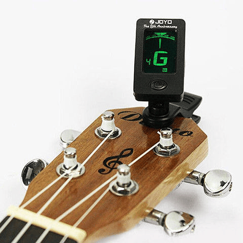
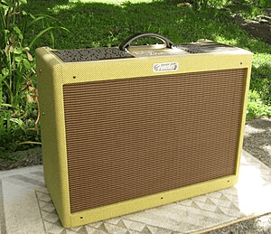

Las cuerdas de la guitarra se nombran de abajo hacia arriba —desde las más agudas a las más graves— con números ordinales: primera cuerda o cuerda prima, segunda cuerda, tercera cuerda, etc. También se las conoce con el nombre de su nota de afinación, como se hace también en los violines, violas, violonchelos y contrabajos:
Esta afinación es la normal, pero muchas veces se usan otras. Algunas de las más comunes son: · Todas las cuerdas bajadas un semitono. · Todas las cuerdas bajadas un tono. · Todas las cuerdas bajadas dos tonos. · D Dropped: afinación común, pero con la 6ª cuerda bajada un tono. · C Dropped: afinación bajada un tono, pero con la 6ª cuerda bajada dos tonos con respecto a la afinación común
En las partituras las cuerdas se nombran con números romanos: I, II, III, IV, V y VI. Las obras para guitarra se escriben en clave de sol.
La amplificación es el proceso de multiplicar la señal eléctrica y hacerla audible por medios electrónicos. Este proceso se produce en varias etapas hasta llegar al altavoz que es el último eslabón de la cadena.
El timbre de la guitarra eléctrica se modifica por cuatro principales factores: la guitarra, las pastillas, la etapa de potencia, y los altavoces. Los amplificadores pueden funcionar mediante válvulas o transistores. Inicialmente incorporaban válvulas, pero con la aparición de las nuevas tecnologías en la electrónica fueron paulatinamente sustituidas por transistores, de menor tamaño y coste. Sin embargo, el sonido característico que proporcionan las válvulas, especialmente cuando se distorsiona el sonido, hace que éstas sean la opción preferida por muchos guitarristas y ha sido la causa de que continúen fabricándose. Aun así, el precio de estos equipos es siempre más elevado: un amplificador Vox AC15 de 15 vatios equipado con válvulas puede costar más del triple que un Vox pathfinder de igual potencia equipado con transistores, siendo esa la principal diferencia entre ambos (junto con el uso de altavoces Celestion Blue en el AC15 y una réplica más económica en el Pathfinder).
 Ejecución y técnicas